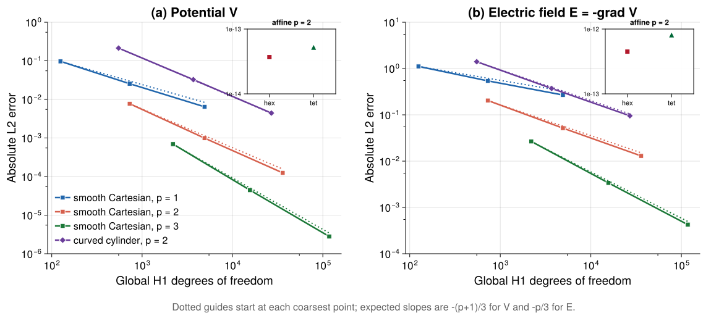

Numerical Verification
Numerical verification checks that the discretized equations implemented by Palace recover the expected solution and convergence behavior for problems with known answers. These studies complement regression tests: regression tests detect changes in established outputs, while verification tests compare against mathematical solutions and theoretical rates.
Electrostatic method of manufactured solutions
The electrostatic method-of-manufactured-solutions (MMS) tests solve
\[-\nabla\cdot\left(\boldsymbol{\varepsilon}\nabla V\right)=\rho, \qquad \boldsymbol{E}=-\nabla V,\]
using the production electrostatic solver. The source $\rho$ and boundary values are derived from a prescribed potential $V_{\mathrm{mms}}$. The computed potential and recovered electric field are compared with the manufactured solution using the absolute $L^2$ errors
\[e_V = \left\|V_h-V_{\mathrm{mms}}\right\|_{L^2}, \qquad e_E = \left\|\boldsymbol{E}_h-\boldsymbol{E}_{\mathrm{mms}}\right\|_{L^2}.\]
The implementation is exercised by the electrostatic MMS unit tests (test-mms-electrostatic-analytic.cpp and the shared harness in test-mms-electrostatic.cpp). The machine-readable results used below are available in electrostatic_mms.csv. The numerical data are collected by generate_electrostatic_mms_data.jl, and the figure is produced by generate_electrostatic_mms_plots.jl. From the repository root, refresh the numerical data and figure with
make docs-mms-refresh BUILD_DIR=buildStructured data reporting is disabled during normal test and documentation builds, so this explicit command is required only when updating the committed verification snapshot.
Convergence on Cartesian and curved meshes
The smooth Cartesian study uses isotropic relative permittivity on the unit cube and the non-homogeneous manufactured potential
\[V_{\mathrm{mms}} = \cos(\pi x)\cos(2\pi y)\cos(\pi z), \qquad \rho_{\mathrm{mms}} = 6\pi^2 V_{\mathrm{mms}}.\]
The exact potential is prescribed on every boundary, so this non-homogeneous case exercises the Dirichlet lift in addition to the interior operator and volumetric source. The convergence sweep uses hexahedral meshes with $N=4,8,16$ elements per direction and solution orders $p=1,2,3$.
The curved-geometry study uses the polynomial
\[V_{\mathrm{mms}} = x^2+2y^2+3z^2\]
on quadratic isoparametric tetrahedra covering a cylinder. This physical-space polynomial is not generally represented exactly after the curved coordinate transformation, so its error should decrease under refinement. The curved sweep uses $p=2$ and three uniform refinement levels.
For smooth solutions, the expected physical-mesh convergence rates are
\[e_V=\mathcal{O}\left(h^{p+1}\right), \qquad e_E=\mathcal{O}\left(h^p\right).\]
The figure uses the global number of $H^1$ unknowns on the horizontal axis to compare the cost of different polynomial orders. In three dimensions, $N_{\mathrm{dof}}=\mathcal{O}(h^{-3})$, so the corresponding plotted slopes are $-(p+1)/3$ for the potential and $-p/3$ for the electric field. Each dotted guide is anchored at the coarsest point of the data series it accompanies. Because the Cartesian and curved studies use different manufactured solutions, their vertical offsets should not be interpreted as an accuracy comparison; the convergence slopes are the relevant result.

The automated test evaluates rates using the physical mesh scale $h=1/N$ rather than the DoF coordinate used in the figure. For the curved mesh, $h$ denotes the uniform refinement scale. The Cartesian potential rates range from $1.927$–$1.987$ for $p=1$, $2.961$–$2.988$ for $p=2$, and $3.965$–$3.990$ for $p=3$. The corresponding electric-field rates are $1.013$–$1.039$, $1.979$–$1.995$, and $2.976$–$2.994$. For the curved $p=2$ case, the potential rate improves from $2.712$ to $2.881$ and the electric-field rate from $1.919$ to $1.961$, indicating mild coarse-mesh pre-asymptotic behavior.
The insets show the same quadratic solution on affine order-2 hexahedral and tetrahedral meshes. Potential errors of approximately $10^{-14}$ and electric-field errors of approximately $10^{-13}$ show that the source construction and affine polynomial representation are accurate to near machine precision. This supports interpreting the nonzero curved-mesh error as a consequence of the isoparametric mapping. The affine check also uses anisotropic permittivity to exercise the material tensor.
A separate single-resolution solve retains coverage of the default homogeneous-Dirichlet path without duplicating the full convergence sweep.
Automated acceptance criteria
The MMS tests run in both serial and distributed-memory configurations. For every consecutive refinement pair, the tests require:
- Monotonically decreasing potential and electric-field errors.
- Potential rates within $0.30$ of $p+1$ on the Cartesian meshes.
- Electric-field rates within $0.30$ of $p$ on the Cartesian meshes.
- Curved-mesh rates within $0.35$ of the corresponding theoretical values.
- Near-machine-precision reproduction of the affine order-2 polynomial.
The focused analytic tests can be run with
palace-unit-tests "[electrostatic][mms][analytic]" --skip-benchmarks
mpirun -np 2 palace-unit-tests "[electrostatic][mms][analytic]" --skip-benchmarksReferences
- D. Garcia-Donoro, L. E. Garcia-Castillo, and S. W. Ting, "Verification Process of Finite-Element Method Code for Electromagnetics: Using the Method of Manufactured Solutions," IEEE Antennas and Propagation Magazine, vol. 58, no. 2, 2016. doi:10.1109/MAP.2016.2520308.